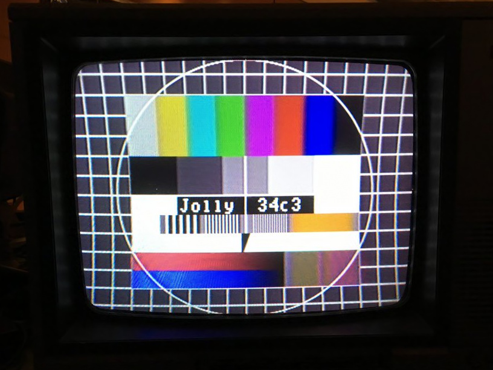

Osmo TV

OsmoTV is capable of transmitting video signals via SDR. This video signal are transmitted on given channels. Color signal and audio carriere can be disabled by option.
The following test signals are supported:
- FUBK test chart (known as the German 'Testbild')
- EBU color bars (8 bars from white to black)
- Red screen for deflection yoke adjustment
- Convergence pattern for convergence adjustment
- A real image of natural colors
- My VCR Test Chart
[Back to main page]
|